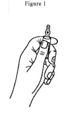
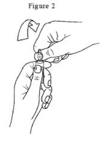

RÉSUMÉ DES CARACTÉRISTIQUES DU PRODUIT
ANSM - Mis à jour le : 04/12/2013
MIVACRON 20 mg/10 ml, solution injectable (IV)
2. COMPOSITION QUALITATIVE ET QUANTITATIVE
Chlorure de mivacurium .................................................................................................................. 21,40 mg
Quantité correspondant à mivacurium .............................................................................................. 20,00 mg
Pour une ampoule.
Pour la liste complète des excipients, voir rubrique 6.1.
Solution injectable.
4.1. Indications thérapeutiques
Le mivacurium est indiqué comme adjuvant de l'anesthésie générale pour relâcher les muscles striés, faciliter l'intubation trachéale et la ventilation artificielle chez l’adulte, l’enfant et le nourrisson âgé de 2 mois et plus.
4.2. Posologie et mode d'administration
Comme avec tous les curares, la surveillance instrumentale de la curarisation (stimulateur de nerf) lors de l'utilisation du mivacurium est recommandée afin d'ajuster individuellement les besoins.
Chez l'adulte
Le mivacurium s'administre en bolus de 5 à 15 secondes. La dose initiale recommandée est de 0,07 à 0,15 mg/kg, elle procure une curarisation profonde pendant 10 à 15 minutes et 15 à 20 minutes respectivement.
Une dose de 0,15 mg/kg de mivacurium procure de bonnes conditions d'intubation trachéale en 2,5 minutes chez la majorité des patients.
Si des doses supérieures étaient nécessaires pour l'intubation, la durée de curarisation serait fonction de la dose. Pour des doses de 0,20 mg/kg et 0,25 mg/kg, l'injection devra s'effectuer en 30 à 60 secondes du fait de l'histaminolibération et de l'hypotension éventuellement provoquée (voir rubrique 4.8).
La curarisation peut être prolongée par des doses d'entretien de mivacurium. Des doses de 0,1 mg/kg administrées au cours d'une anesthésie aux morphiniques procurent environ 15 minutes de curarisation supplémentaire. Plusieurs doses d'entretien peuvent être successivement administrées sans que l'on observe d'effet curarisant cumulatif. Cependant, le délai entre deux injections doit être ajusté en fonction du monitorage neuromusculaire.
L'action curarisante du mivacurium est potentialisée par l'isoflurane ou l'enflurane. Lorsque l'anesthésie avec ces produits est stabilisée, il est recommandé de réduire la dose initiale d'environ 25 %. L'halothane semble avoir un effet potentialisateur minime sur le mivacurium et il n'est probablement pas nécessaire de réduire les doses de mivacurium.
Une fois la décurarisation commencée, celle-ci est en règle générale achevée de façon complète en 15 minutes environ et le délai de décurarisation est indépendant de la dose de mivacurium administrée.
La décurarisation sera monitorée à l'aide d'un stimulateur de nerf.
Utilisation en perfusion intraveineuse chez l'adulte
MIVACRON est compatible avec les liquides de perfusion suivants (concentration à 0,5 mg/ml : dilution au 1/4) :
· Solution de chlorure de sodium à 0,9 %.
· Solution glucosée à 5 %.
· Solution glucosée 5 %, sodique 0,9 %.
· Liquide de Ringer.
MIVACRON, une fois dilué, est stable chimiquement et physiquement pendant au moins 48 heures à la température de 30°C. MIVACRON ne contenant aucun conservateur anti-microbien, il est recommandé de ne pas conserver la solution préparée à l'avance pendant plus de 12 heures.
La solution de MIVACRON est acide et compatible avec le fentanyl, l'alfentanil, le sufentanil, le droperidol et le midazolam.
MIVACRON ne doit pas être mélangé dans la même seringue ou administré simultanément avec la même aiguille que le thiopental ou tout autre produit alcalin.
Lorsque d’autres agents anesthésiques sont administrés au travers de la même aiguille ou canule et que la compatibilité n’a pas été démontrée, un rinçage entre chaque produit avec du sérum physiologique est recommandé.
Après administration du bolus initial, la curarisation peut être prolongée en administrant le mivacurium en perfusion intraveineuse. Dès l'observation des premiers signes de décurarisation, observés grâce au monitorage instrumental, une perfusion peut être débutée avec un débit de 8 à 10 µg/kg/min (0,5 à 0,6 mg/kg/h). Le débit de la perfusion doit être ajusté en fonction du monitorage neuromusculaire. Comme les doses nécessaires à l'obtention d'un niveau donné de curarisation sont très variables d'un patient à l'autre, l'utilisation d'un stimulateur périphérique de nerf est recommandée pour éviter au mieux le risque de surdosage ou l'inconvénient d'un sous-dosage.
L'ajustement du débit de perfusion doit être fait par palier d'environ 1 µg/kg/min (0,06 mg/kg/h).
En général, un débit de perfusion donné doit être maintenu pendant au moins 3 minutes avant d'en changer. Un débit de perfusion de 6 à 7 µg/kg/min permet un bloc neuromusculaire d'environ 89 à 99 % au cours d'une anesthésie aux morphiniques.
Au cours d'une anesthésie à l'isoflurane et à l'enflurane, lorsque l'anesthésie est stabilisée, il peut être nécessaire de réduire le débit de perfusion jusqu'à 40 %. Avec l'halothane les réductions sont plus faibles.
La réversibilité de la curarisation induite par le mivacurium est indépendante de la durée de la perfusion et les délais de décurarisation sont comparables à ceux observés après administration du produit en bolus.
Chez l'enfant de 7 mois à 12 ans
Chez l'enfant, les études de curarisation ont toutes été faites sous anesthésie à l'halothane.
Chez l'enfant de 7 mois à 12 ans, le mivacurium possède une DE95 plus élevée (approximativement 0,1 mg/kg), un délai d'action plus rapide, une durée d'action plus courte et une réversibilité plus rapide que chez l'adulte.
La dose initiale recommandée est de 0,1 à 0,2 mg/kg administrée en 5 à 15 secondes.
Une dose de 0,2 mg/kg administrée au cours d'une anesthésie stabilisée à l'halothane ou aux morphiniques procure une curarisation pendant environ 9 minutes.
La dose recommandée pour intuber dans de bonnes conditions est de 0,2 mg/kg. La curarisation est maximale 2 minutes environ après l'administration, c'est-à-dire 0,5 à 1 minute plus vite que chez l'adulte.
L'administration de doses d'entretien doit se faire plus fréquemment que chez l'adulte. Une dose d'entretien de 0,1 mg/kg procure une curarisation profonde pendant 6 à 9 minutes supplémentaires.
Le débit de perfusion nécessaire chez les enfants est généralement plus élevé que chez l'adulte. Au cours d'une anesthésie à l'halothane, le débit de perfusion nécessaire pour maintenir un bloc neuromusculaire entre 89 et 99 %, chez les enfants âgés de 7 à 23 mois, est en moyenne de 11 µg/kg/min (0,7 mg/kg/h).
Chez les enfants âgés de 2 à 12 ans, le débit de perfusion est en moyenne de 13 à 14 µg/kg/min (0,8 mg/kg/h) au cours d'une anesthésie à l'halothane ou aux morphiniques.
Une fois un début de récupération obtenue, celle-ci est complète en approximativement 10 minutes.
Chez le nourrisson de 2 à 6 mois
Chez le nourrisson, les études de curarisation ont toutes été faites sous anesthésie à l'halothane.
La DE95 est identique à celle de l'adulte (0,07 mg/kg).
Chez le nourrisson de 2 à 6 mois, le mivacurium possède un délai d'action plus rapide, une durée d'action plus courte et une réversibilité plus rapide que chez l'adulte.
La dose initiale recommandée est de 0,1 à 0,15 mg/kg. Une dose de 0,15 mg/kg administrée au cours d'une anesthésie stable à l'halothane procure une curarisation profonde pendant 9 minutes environ. La dose recommandée pour intuber dans de bonnes conditions est de 0,15 mg/kg. La curarisation est maximale 1,4 minute environ après l'administration.
L'administration de doses d'entretien doit se faire plus fréquemment que chez l'adulte.
Une dose d'entretien de 0,1 mg/kg au cours d'une anesthésie à l'halothane procure une curarisation profonde pendant 7 minutes supplémentaires.
Le débit de perfusion nécessaire chez le nourrisson est généralement plus élevé que chez l'adulte.
Au cours d'une anesthésie à l'halothane, le débit de perfusion nécessaire pour maintenir un bloc neuromusculaire entre 89 et 99 %, est en moyenne de 11 µg/kg/min (de 4 à 24 µg/kg/min) (0,7 mg/kg/h).
Une fois la décurarisation commencée, elle est complète en 10 minutes environ.
Chez le nouveau-né et le nourrisson de moins de 2 mois
La sécurité et l’efficacité du mivacurium chez le nouveau-né et le nourrisson de moins de 2 mois n’ont pas encore été établies. Aucune recommandation de posologie ne peut être faite.
Chez le sujet âgé
Le mivacurium administré en bolus a une durée d'action et un délai de réversibilité plus longs de 20 à 30 % que chez l'adulte, à doses égales. Les sujets âgés peuvent nécessiter un débit de perfusion moindre que chez l'adulte ou encore l'administration de bolus d'entretien plus faibles et moins fréquents.
Chez les patients ayant une insuffisance rénale
Une dose de 0,15 mg/kg de chlorure de mivacurium est recommandée pour faciliter l'intubation trachéale.
Chez les patients ayant une insuffisance rénale terminale, la durée de curarisation cliniquement efficace induite par cette dose est environ 1,5 fois plus longue que chez les patients à fonction rénale normale avec la même dose.
En conséquence, la dose administrée doit être ajustée en fonction de la réponse individuelle de chaque patient.
Un bloc neuromusculaire prolongé et intensifié peut également survenir chez les patients ayant une insuffisance rénale aiguë ou chronique en raison d’un taux réduit de cholinestérases plasmatiques (voir rubrique 4.4).
Chez les patients ayant une insuffisance hépatique
Une dose de 0,15 mg/kg de mivacurium est recommandée pour faciliter l'intubation trachéale. Chez les malades ayant une insuffisance hépatique terminale, la durée de curarisation cliniquement efficace induite par cette dose est environ 3 fois plus longue que chez les patients à fonction hépatique normale. Cette prolongation de curarisation est due à une réduction notable de l'activité des cholinestérases plasmatiques (pseudocholinestérases) chez ces patients.
En conséquence, la dose administrée doit être ajustée en fonction de la réponse individuelle de chaque patient.
Chez les sujets présentant une pathologie cardio-vasculaire sévère
La dose initiale de mivacurium doit être administrée lentement en 60 secondes. L'injection lente de mivacurium chez des sujets subissant un remplacement valvulaire ou un pontage coronarien n'a pas eu d'effets hémodynamiques significatifs.
Chez les patients ayant une activité cholinestérase plasmatique (pseudocholinestérasique) réduite d'au moins 20 %
Le mivacurium est métabolisé par les pseudocholinestérases plasmatiques. L'activité de ces cholinestérases plasmatiques est diminuée chez les patients ayant une anomalie génétique des cholinestérases plasmatiques (patients hétérozygotes ou homozygotes pour un gène atypique des cholinestérases plasmatiques), dans diverses conditions pathologiques (voir rubrique 4.4), et lors de l'administration concomitante d'autres médicaments (voir rubrique 4.5).
On peut observer une curarisation prolongée après administration de mivacurium chez les patients avec une activité cholinestérase plasmatique réduite. Des réductions modérées de cette activité (dans les 20 % de la limite basse de la normale) ne sont pas associées à des effets cliniquement significatifs sur la durée de curarisation (voir rubriques 4.3 et 4.4 pour les informations concernant les patients homozygotes et hétérozygotes).
Chez le patient obèse (pesant 30 % de plus que son poids idéal), la dose initiale de mivacurium doit être calculée en fonction du poids idéal et non du poids réel.
· Hypersensibilité au mivacurium.
· Patients ayant des antécédents de curarisation prolongée avec un curare métabolisé par les cholinestérases plasmatiques, ou ayant un déficit homozygote connu en cholinestérases plasmatiques.
Ce médicament NE DOIT GENERALEMENT PAS ETRE UTILISE dans le cas suivant:
· Association avec la toxine botulique.
4.4. Mises en garde spéciales et précautions d'emploi
Le mivacurium ne doit être administré que par des anesthésistes ou des praticiens familiarisés avec l'utilisation et l'action des curares, ou sous leur contrôle. Du matériel d'intubation trachéale, d'assistance respiratoire et d'oxygénation artérielle adéquat doit être disponible.
Le mivacurium doit être utilisé sous contrôle du niveau de curarisation (aussi bien chez les nourrissons que chez les enfants et les adultes).
L’utilisation chez le nouveau-né et le nourrisson de moins de 2 mois n’est pas recommandée en raison de données limitées (voir rubrique 4.2).
Précautions d’emploi
Des réactions anaphylactiques aux curares en général ont été décrites (parfois sévères, telles que : choc, arrêt cardiaque). Bien que ces phénomènes ne se produisent que très rarement avec le mivacurium, des précautions doivent toujours être prises pour pallier la survenue éventuelle de ces réactions.
Il convient de prendre des précautions particulières dans les cas d'antécédents connus de réactions anaphylactiques aux curares, car un taux élevé de réactions allergiques croisées (supérieur à 50 %) entre les curares a été rapporté.
Antagonisme du bloc neuromusculaire :
Comme les doses nécessaires à l'obtention d'un niveau donné de curarisation sont très variables d'un patient à l'autre, l'utilisation d'un stimulateur périphérique de nerf est fortement recommandée, avant et jusqu'à complète réversibilité du bloc neuromusculaire, pour éviter au mieux le risque de surdosage ou l'inconvénient d'un nouveau sous-dosage.
Comme avec tous les curares, une récupération spontanée doit être observée avant l’administration d’anticholinestérasiques (néostigmine).
En cas d'apnée prolongée, il faut maintenir la ventilation assistée jusqu'à réapparition spontanée d'une respiration et d'une activité musculaire efficace.
Le mivacurium est hydrolysé par les pseudocholinestérases ou butyrylcholinestérases et le seul anti-cholinestérasique injectable d'action rapide disponible en France est la néostigmine qui est un inhibiteur partiel des pseudocholinestérases.
Dans tous les cas, un monitorage précis de la curarisation et donc de la décurarisation est indispensable ainsi que le maintien d'une ventilation assistée jusqu'à réapparition spontanée d'une respiration et d'une activité musculaire efficace.
Le mivacurium doit être utilisé avec précaution chez les patients souffrant de myasthénie ou d'autres maladies neuromusculaires et chez les patients cachexiques, en raison de la possibilité d’augmentation de la sensibilité aux curares. Le mivacurium doit également être utilisé avec précaution chez les patients ayant des antécédents familiaux de curarisation prolongée avec un curare métabolisé par les cholinestérases plasmatiques.
Le mivacurium doit être utilisé avec précaution chez les patients ayant des anomalies acido-basiques sévères ou anomalies électrolytiques (hypokaliémie, hypocalcémie) qui peuvent augmenter ou réduire la sensibilité au mivacurium.
Chez les patients ayant une diminution de l'activité des cholinestérases plasmatiques, il est possible d'observer une prolongation et une intensification du bloc neuromusculaire dans les états suivants ou conditions biologiques ou cliniques pathologiques suivantes :
· en cas de modification physiologique comme la grossesse ou la période puerpérale (voir rubrique 4.6),
· en cas d’anomalies génétiques identifiées des cholinestérases plasmatiques (voir ci-dessous et rubrique 4.3),
· en cas de tétanos sévère généralisé, de tuberculose ou d’autres infections sévères ou chroniques,
· lors de maladie chronique débilitante, de tumeurs malignes, d’anémie chronique ou de malnutrition,
· en cas de myxœdème ou de collagénose,
· en cas de pathologie cardiaque décompensée,
· en cas d’ulcère gastrique,
· chez les brûlés (voir ci-dessous),
· en cas d’insuffisance hépatique au stade terminal (voir rubrique 4.2),
· en cas d’insuffisance rénale aiguë, chronique ou au stade terminal (voir rubrique 4.2),
· en cas de cause iatrogène : après un échange plasmatique, une plasmaphérèse, une circulation extracorporelle, ou après l’administration concomitante d’autres médicaments (voir rubrique 4.5).
En effet, le mivacurium est métabolisé par les cholinestérases plasmatiques (pseudocholinestérases), (voir rubrique 4.2).
Chez les patients porteurs d'une anomalie génétique des cholinestérases plasmatiques :
Comme avec la succinylcholine, les patients homozygotes ayant un déficit en cholinestérase plasmatique (1/2500 patients environ) sont extrêmement sensibles aux effets curarisants de MIVACRON (voir rubrique 4.3).
Chez 3 patients homozygotes adultes, une faible dose de mivacurium de 0,03 mg/kg (correspondant approximativement à DE10-20 chez les patients non porteurs d’anomalie génétique des cholinestérases plasmatiques) a conduit à un bloc neuromusculaire complet de 26 à 128 min.
La décurarisation complète spontanée peut ne survenir qu'au bout de 12 heures.
Chez les patients hétérozygotes ayant un déficit en cholinestérases plasmatiques, la durée de curarisation cliniquement efficace induite par une dose de mivacurium de 0,15 mg/kg est plus longue d’environ 10 minutes que chez les patients ayant une activité des cholinestérases plasmatiques normales.
Le bloc neuromusculaire chez ces patients a été antagonisé avec des doses conventionnelles de néostigmine dès le démarrage de la récupération spontanée.
On peut observer au cours de l'administration de mivacurium une libération d'histamine. Le mivacurium doit être utilisé avec précaution chez les sujets atopiques ou sensibles aux effets de l'histamine comme par exemple chez l'asthmatique. Dans ce cas, l'administration se fait en plus de 60 secondes.
Chez les sujets sensibles à une diminution de pression artérielle (par exemple hypovolémiques), le mivacurium doit être administré lentement en 60 secondes.
Chez l'adulte, des doses supérieures ou égales à 0,2 mg/kg (supérieures ou égales à 3 x DE95) ont été associées à des libérations d'histamine quand elles sont administrées par injection de bolus rapides. La libération d'histamine semble liée à la fois à la dose et à la vitesse d'administration. Une administration plus lente d'une dose de 0,2 mg/kg ou d'une dose de 0,25 mg/kg fractionnée diminue les effets cardio-vasculaires (voir rubrique 4.2).
Au cours des études cliniques, la tolérance cardiovasculaire n’a pas été remise en cause chez les enfants ayant reçu une dose de 0,2 mg/kg par injection en bolus rapide.
Aux doses recommandées, le mivacurium n'a pas d'effet significatif sur le système vagal ni d'effet ganglioplégique. Il n'a donc pas d'effet clinique significatif sur le rythme cardiaque et ne devrait pas antagoniser la bradycardie induite par la plupart des anesthésiques ou par la stimulation vagale au cours de l'acte chirurgical.
Chez les patients insuffisants hépatiques graves et chez les patients traités par certains médicaments (voir rubrique 4.5) la sensibilité au bloc neuromusculaire induit par le mivacurium est augmentée.
Chez les brûlés, une résistance aux curares non dépolarisants peut apparaître et des doses plus importantes peuvent être nécessaires. Cependant, ces patients peuvent également avoir une activité cholinestérase plasmatique réduite, qui nécessite une diminution des doses.
En conséquence, il convient d'administrer à ces patients une dose test initiale de 0,015 à 0,020 mg/kg de mivacurium qui sera suivie d'une dose adaptée en fonction des données du monitorage du bloc avec un stimulateur de nerf périphérique.
Des essais réalisés chez des porcs sensibles à l’hyperthermie maligne rapportent que le mivacurium ne déclenche pas ce syndrome. Le mivacurium n’a pas été étudié chez des patients susceptibles d’hyperthermie maligne.
Aucune donnée n’est disponible sur l’utilisation au long cours de mivacurium chez des patients sous ventilation assistée en Unité de Soins Intensifs.
4.5. Interactions avec d'autres médicaments et autres formes d'interactions
Certaines substances peuvent modifier l'intensité et/ou la durée de l'effet des curares non dépolarisants.
L'association de MIVACRON avec d'autres curares non dépolarisants peut entraîner un bloc neuromusculaire plus important que celui attendu lors de l'administration d'une dose totale équipotente de mivacurium. L'effet synergique est variable selon le ou les curares associés (voir ci-dessus).
L'administration de suxaméthonium, destinée à prolonger les effets des curares non dépolarisants, peut provoquer un bloc complexe, impossible à antagoniser par les anticholinestérasiques.
Le mivacurium a été administré en toute sécurité après intubation trachéale facilitée par le suxaméthonium. La preuve de réversibilité spontanée au suxaméthonium doit être observée avant l'administration de mivacurium.
Les médicaments susceptibles de potentialiser l'action des curares non dépolarisants sont:
· les anesthésiques volatils tels que isoflurane, desflurane, sévoflurane ou halothane,
· la kétamine,
· les anesthésiques locaux,
· les antibiotiques (dont les aminosides, les polymyxines, les tétracyclines, les lincosanides),
· les anti-arythmiques (dont le propranolol, les inhibiteurs calciques, la lidocaïne, le procaïnamide et la quinidine),
· les diurétiques (dont le furosémide et probablement les thiazidiques, le mannitol et l'acétazolamide),
· les sels de magnésium et de lithium,
· les ganglioplégiques,
· le dantrolène,
Les médicaments susceptibles de diminuer l'activité des cholinestérases plasmatiques peuvent également prolonger la durée d'action du mivacurium. Ces médicaments incluent: les antimitotiques, les inhibiteurs de la monoamine oxydase, l'iodure d'écothiopate, le pancuronium, les organophosphates, les anti-cholinestérasiques, certaines hormones, le bambutérol.
Rarement, certaines substances peuvent aggraver ou révéler une myasthénie latente, voire déclencher un syndrome myasthénique, provoquant ainsi une augmentation de la sensibilité au mivacurium.
Ces substances comprennent divers antibiotiques, des bêta-bloquants (propranolol, oxprénolol), des anti-arythmiques (quinidine), des médicaments utilisés en rhumatologie (chloroquine, D-pénicillamine), la chlorpromazine, les corticostéroïdes, la phénytoïne et le lithium.
En principe, un monitoring maintenu jusqu'à complète décurarisation permet de pallier toute interaction. Toutefois, une recurarisation non prévue pourrait survenir, dans le cas d'une couverture antibiotique post-opératoire avec un aminoside, par exemple.
Il n'existe pas de données sur la fécondité.
Premier trimestre:
Les études chez l'animal n'ont pas mis en évidence d'effet tératogène.
En clinique, aucun effet malformatif ou fœtotoxique particulier n'est apparu à ce jour. Toutefois, le suivi de grossesses exposées au mivacurium est insuffisant pour exclure tout risque.
En conséquence, l'utilisation du mivacurium ne doit être envisagée au cours de la grossesse qu'en cas de nécessité absolue.
Fin de grossesse:
La fin de grossesse doit être considérée, d'un point de vue anesthésique, comme un «estomac plein» exposant au syndrome de Mendelson (pneumopathie acide par inhalation du suc gastrique).
Dans ces conditions, l'intubation doit être rapide et il importe de privilégier un curare à délai d'action bref (inférieur à 1 minute).
Le relais peut ensuite être pris par un curare à action plus lente.
Le passage transplacentaire des curares est faible et le risque de curarisation néonatal est exceptionnel.
Le taux de cholinestérases plasmatiques diminue pendant la grossesse. Le mivacurium a été utilisé pour maintenir le bloc neuromusculaire pendant la césarienne, mais en raison de la diminution du taux de cholinestérases plasmatiques, un ajustement du débit de perfusion s'est avéré nécessaire.
Une nouvelle réduction du débit de perfusion peut également s'avérer nécessaire au cours de la césarienne chez les patientes prétraitées avec MgSO4 en raison des effets de potentialisation de Mg2+.
En l'absence de donnée, en cas d'administration de curare, l'allaitement doit être suspendu.
4.7. Effets sur l'aptitude à conduire des véhicules et à utiliser des machines
Cette précaution n'est pas pertinente compte tenu de l'utilisation du mivacurium en association à d'autres agents anesthésiques. Ainsi, les précautions habituelles concernant l'aptitude à conduire des véhicules et à utiliser des machines après une anesthésie générale doivent toujours s'appliquer.
La classification selon la fréquence utilise la convention suivante : très fréquent (≥ 1/10), fréquent (≥ 1/100 à < 1/10), peu fréquent (≥ 1/1 000 à < 1/100), rare (≥ 1/10 000 à < 1/1 000) et très rare (< 1/10 000).
Affections du système immunitaire
Très rare : réaction anaphylactique.
Très rarement des réactions anaphylactoïdes ou anaphylactiques sévères telles que choc ou arrêt cardiaque ont été rapportées chez des patients ayant reçu MIVACRON en association avec un ou plusieurs agents anesthésiques.
Des précautions doivent toujours être prises pour pallier à la survenue éventuelle de ces réactions.
Il convient de prendre des précautions particulières dans les cas d'antécédents connus de réactions anaphylactiques aux curares, une réactivité allergique croisée pouvant se produire avec ces agents (voir rubrique 4.4).
Affections cardiaques
Peu fréquent : tachycardie transitoire†.
Affections vasculaires
Très fréquent : rougeur cutanée†.
Peu fréquent : hypotension†.
Affections respiratoires, thoraciques et médiastinales
Peu fréquent : bronchospasme†.
Affections de la peau et du tissu sous-cutané
Peu fréquent : érythème†, urticaire†.
† Les myorelaxants peuvent induire une libération d'histamine, à la fois au niveau local et systémique.
Des effets indésirables liés à la libération d'histamine (rougeurs cutanées, érythème, urticaire, hypotension, tachycardie transitoire et bronchospasme) ont été rapportés.
Ces effets indésirables liés à la dose sont plus fréquents pour des doses initiales supérieures ou égales à 0,2 mg/kg administrées rapidement.
L'administration lente en 30 à 60 secondes ou en dose fractionnée sur la même durée permet d'éviter ou de diminuer ces effets indésirables.
Des cas de curarisation prolongée jusqu'à 12 heures ont été rapportés (voir rubrique 4.4).
Le profil de sécurité chez l’enfant est similaire à celui observé chez l’adulte.
Déclaration des effets indésirables suspectés
La déclaration des effets indésirables suspectés après autorisation du médicament est importante. Elle permet une surveillance continue du rapport bénéfice/risque du médicament. Les professionnels de santé déclarent tout effet indésirable suspecté via le système national de déclaration : Agence nationale de sécurité du médicament et des produits de Santé (ANSM) et réseau des Centres Régionaux de Pharmacovigilance. www.ansm.sante.fr.
Signes et symptômes
· Paralysie musculaire prolongée et ses conséquences sont les principaux signes de surdosage.
· Effets indésirables d'ordre hémodynamique: hypotension artérielle.
Conduite à tenir
Il n'existe pas d'antidote du mivacurium.
Il est essentiel de maintenir la ventilation pulmonaire artificielle jusqu'à l'obtention d'une respiration spontanée adéquate. La sédation totale est nécessaire, puisque la vigilance n'est pas modifiée par le mivacurium.
La récupération peut être accélérée par l'administration d'anticholinestérasiques associés à l'atropine, dès l'observation des premiers signes de récupération spontanée.
Une assistance cardio-vasculaire peut être éventuellement nécessaire avec utilisation de solutions de remplissage et de médicaments vasoconstricteurs.
5. PROPRIETES PHARMACOLOGIQUES
5.1. Propriétés pharmacodynamiques
Classe pharmacothérapeutique: CURARES (RELAXANT MUSCULAIRE), Code ATC: M03AC10.
(M: système locomoteur).
Le mivacurium est un agent curarisant de courte durée d'action, d'environ 15 minutes, exerçant ses effets pharmacologiques par blocage non dépolarisant de la jonction neuromusculaire.
Le profil de réversion du mivacurium est très rapide et il ne s'accumule pas après administration répétée de doses d'entretien en l'absence de déficit en cholinesterases (pseucholinesterases) plasmatiques.
5.2. Propriétés pharmacocinétiques
Après injection IV d'une dose curarisante, l'action du mivacurium est brève. La durée du bloc neuromusculaire induit est principalement dépendante de l'hydrolyse du produit par les pseudocholinestérases plasmatiques et secondairement par les estérases hépatiques. L'élimination des produits d'hydrolyse se fait principalement par voie biliaire et rénale.
Chez le sujet sain, le volume de distribution est faible et varie entre 0,065 et 0,15 l/kg. La clairance plasmatique totale est d'environ 40 à 70 ml/min/kg et la demi-vie d'élimination est d'environ 2 minutes.
Chez l'insuffisant hépatique terminal, la clairance plasmatique moyenne est plus faible (33,3 ml/min/kg) et la demi-vie d'élimination allongée (4,35 minutes) du fait de la diminution de l'activité des pseudocholinestérases plasmatiques mais il n'y a pas de variation du volume de distribution.
Chez l'insuffisant rénal terminal, la clairance plasmatique totale (76,6 ml/min/kg), le volume de distribution (0,15 l/kg) et la demi-vie d'élimination (1,8 min) ne sont pas significativement différents des paramètres retrouvés chez l'adulte sain.
Chez le sujet âgé, la clairance plasmatique (47 ml/min/kg), le volume de distribution (0,07 l/kg) et la demi-vie d'élimination (1,7 min) ne sont pas significativement différents de ceux du sujet sain.
Chez le nourrisson de 2 à 6 mois et l'enfant de 7 mois à 12 ans, les paramètres pharmacocinétiques sont comparables à ceux obtenus chez l'adulte jeune.
5.3. Données de sécurité préclinique
Non renseignée.
Acide chlorhydrique concentré, eau pour préparations injectables.
Ce médicament ne doit pas être mélangé avec d'autres médicaments à l'exception de ceux mentionnés dans la rubrique 4.2.
18 mois.
Après ouverture/reconstitution/dilution: voir rubrique 4.2.
6.4. Précautions particulières de conservation
A conserver à une température inférieure à 25°C et à l'abri de la lumière.
Ne pas congeler.
6.5. Nature et contenu de l'emballage extérieur
Ampoule (verre) de 10 ml. Boîte de 5 ou de 10.
6.6. Précautions particulières d’élimination et de manipulation
Les ampoules sont munies d'un système d'ouverture OPC (One Point Cut) et doivent être cassées selon les instructions suivantes:
· Maintenir avec la main la partie inférieure de l'ampoule comme indiqué sur la figure 1.
· Saisir la partie supérieure de l'ampoule avec l'autre main, le pouce posé sur le point coloré et exercer une pression comme indiqué sur la figure 2.
|
 |
 |
7. TITULAIRE DE L’AUTORISATION DE MISE SUR LE MARCHE
LABORATOIRE GLAXOSMITHKLINE
100, ROUTE DE VERSAILLES
78163 MARLY-LE-ROI CEDEX
8. NUMERO(S) D’AUTORISATION DE MISE SUR LE MARCHE
· 577 235-1 ou 34009 577 235 1 4: 10 ml en ampoule (verre). Boîte de 5.
· 558 310-1 ou 34009 558 310 1 3: 10 ml en ampoule (verre). Boîte de 10.
9. DATE DE PREMIERE AUTORISATION/DE RENOUVELLEMENT DE L’AUTORISATION
[à compléter par le titulaire]
10. DATE DE MISE A JOUR DU TEXTE
[à compléter par le titulaire]
Sans objet.
12. INSTRUCTIONS POUR LA PREPARATION DES RADIOPHARMACEUTIQUES
Sans objet.
Liste I.
Réservé à l'usage hospitalier.